- 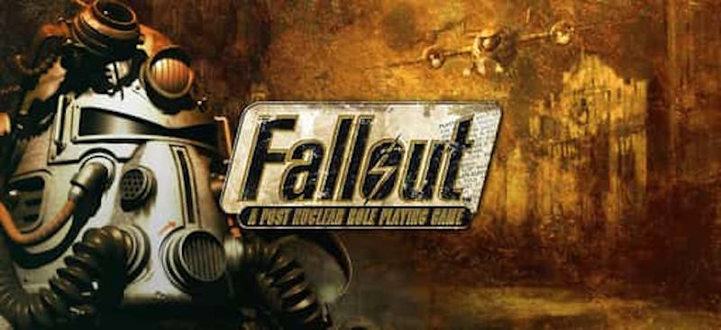
-
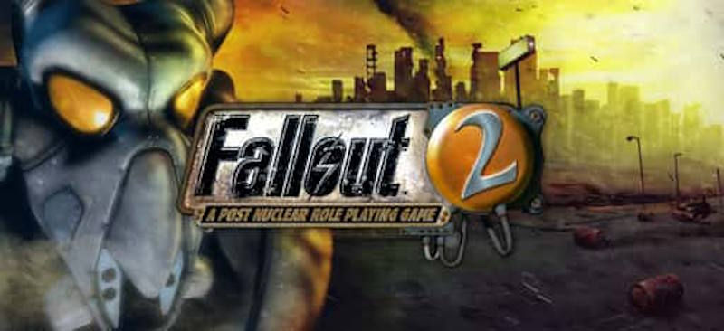
Fallout 2 (1998)
Продолжение оригинала. Вы — Избранный, спасающий свою деревню от голода.
Узнать больше -
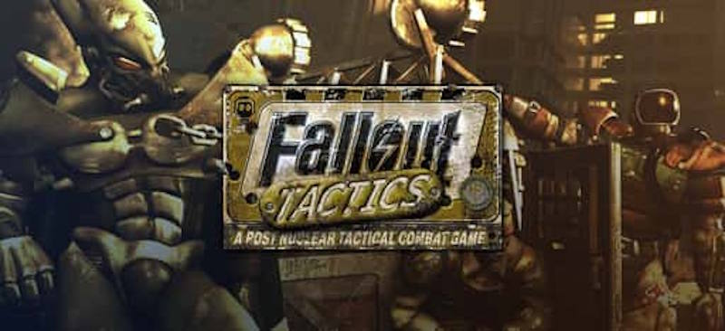
Fallout Tactics (2001)
Тактическая RPG с упором на боевые действия и командное управление.
Узнать больше -
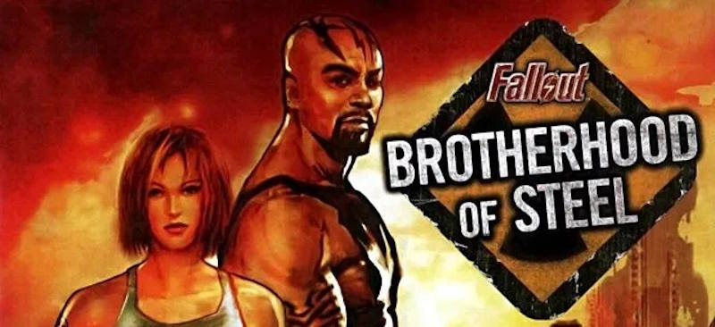
Fallout: Brotherhood of Steel (2004)
Консольный экшен-RPG, где вы сражаетесь за Братство Стали.
Узнать больше - 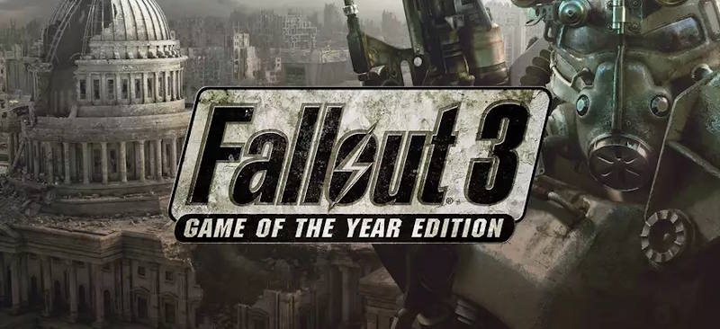
-
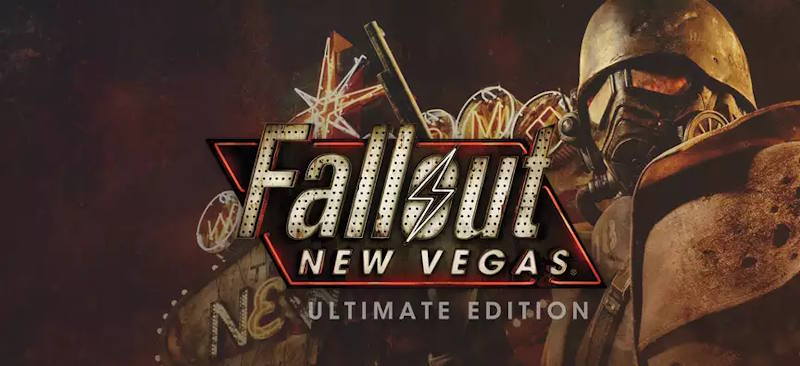
Fallout: New Vegas (2010)
История курьера, который оказывается в центре конфликта за Новый Вегас.
Узнать больше - 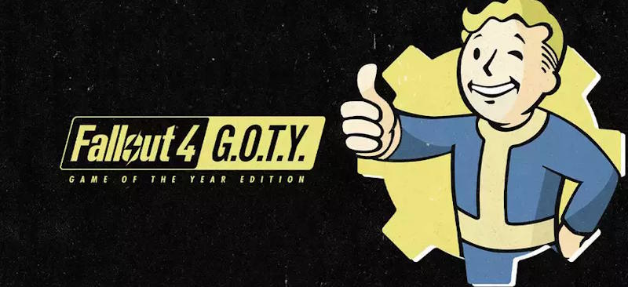
-
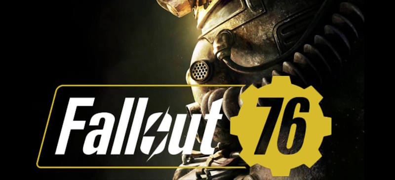
Fallout 76 (2018)
Многопользовательская игра, где вы восстанавливаете Западную Вирджинию.
Узнать больше -
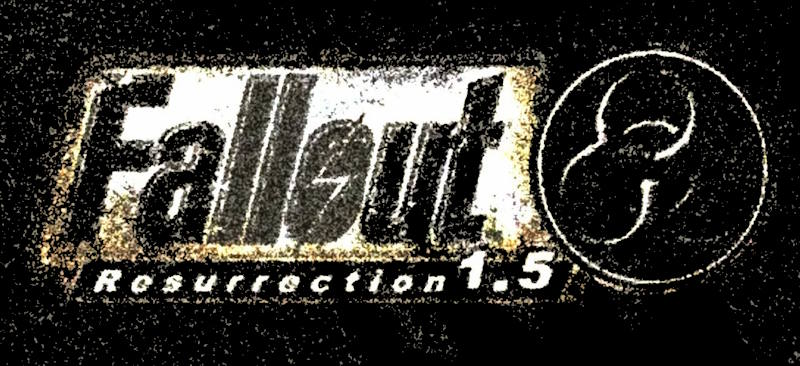
Fallout 1.5: Resurrection (мод для Fallout 2)
МДействие происходит между событиями Fallout и Fallout 2. Вы играете за безымянного персонажа, который оказывается втянут в борьбу за выживание в жестоком мире Постапокалипсиса.
Узнать больше -
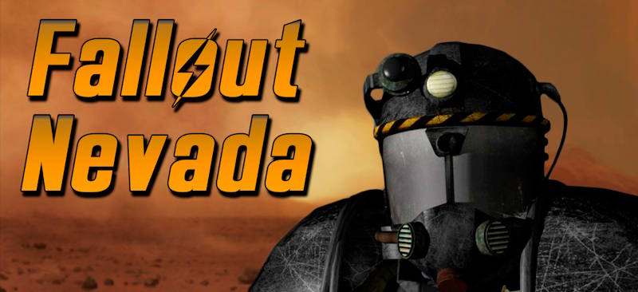
Fallout:Nevada (мод для Fallout 2)
Мод с новой историей, локациями и персонажами в мире Fallout.
Узнать больше -
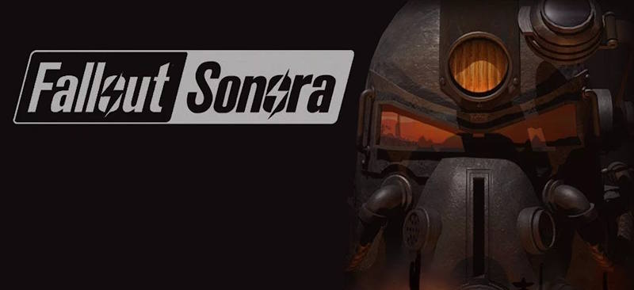
Fallout Sonora (мод для Fallout 2)
Мод, переносящий действие в пустыни Соноры с уникальным сюжетом.
Узнать больше